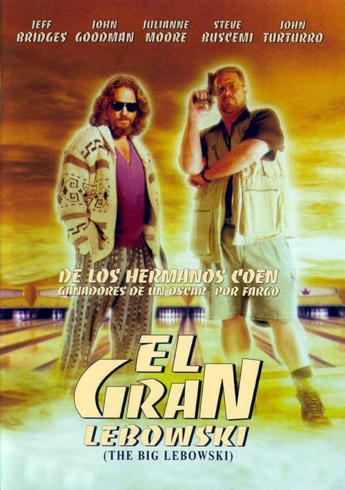
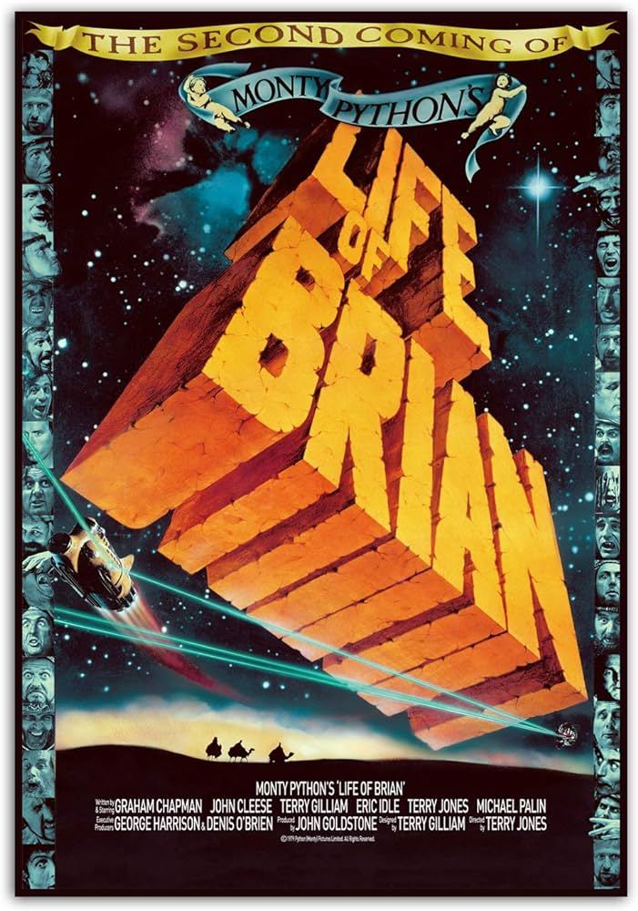
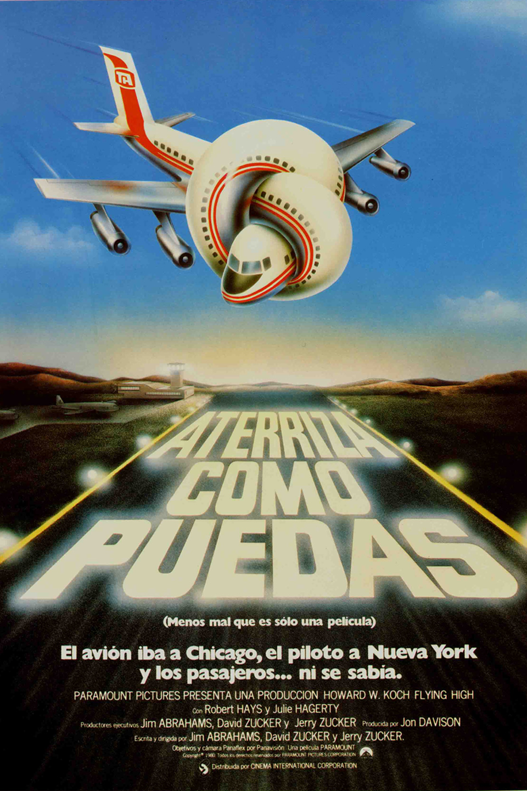

Scary movie
Laburpena
Beldurrezko film modernoen parodia honetan, gizon bat harrapatu eta hilotzaz libratu eta
urtebetera, nerabe talde bat serieko hiltzaile alfer samar batek zelatatzen du. Beste slasher batzuei ,
batez ere Screami, txistez betetako filma.
Egileak: Keenen Ivory Wayans
Iraupena: 1h 30m
Argitaratze-data: 2000

El Gran Lebowsky
Laburpena
"EL NOTA" Egun batean talde kriminalen arazo arriskutsu batean murgildurik aurkitzen da, bere
izen bera duen aberats batekin, Jeff Lebowskirekin, nahastu ondoren. Ez du gertatutakoa onartuko
eta benetako Lebowsky jaunaren bila doa kontuak garbitzeko.
Egileak: Ethan Coen & Joel Coen
Iraupena: 1h 59m
Argitaratze-data: 1998

La Vida De Brian
Laburpena
1947. urtea, AEBetako Maine estatuko Portland hiria. Bere emaztearen hilketa leporatuta Andrew
Dufresnek bizi osorako espetxera zigorra jaso eta Shawshank espetxera eramana da. Hasiera batean
espetxea jasateko gai ez zirudien pertsona ahula izan arren, urteak igaro hala, espetxeko zuzendariaren
konfiantza eta preso-kideen errespetua irabaziz joango da,bereziki Red presoarena, espetxe barneko
eroskeri mafia taldeko buruzagia dena, biak adiskide min egingo direlarik..
Egileak: Frank Darabont
Iraupena: 2h 22m
Argitaratze-data: 1995

Aterriza Como Puedas
Laburpena
Filmean, Morgan Freeman lankide duen boxeo entrenatzaile zaharra da Clint Eastwood. Lehenaldiko garai
ilunak garbitu nahian,Hilary Swank emakumezko boxeolari amateur gazteari profesional bihur dadin
laguntzen saiatuko da. Amaieran, eutanasiaren gaia plazaratzen du zuzendariak erronka eta testuinguru
soziala aztertzen ditu, baina, azken finean, baita sinesmen eta indarraren aurrean eragina ere.
Egileak: Clint Eastwood
Iraupena: 2h 13m
Argitaratze-data: 2005
